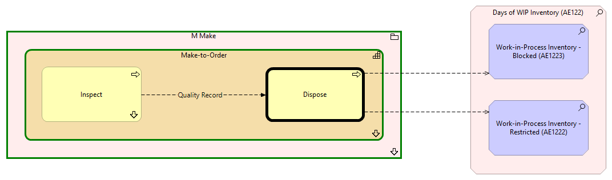

Dispose - Context
(
)

generated_by
build_archi_xml.py::gen_proc_node_context_view
generator_path
pedro/capabilities/build_archi_xml_assign/build_archi_xml_assign.py
run_at
2026-10-10T17:57:28
view_type
process_context
M Make
Make-to-Order
Inspect
Inspect - Context
Dispose
Make-to-Order - Processes
M Make - Processes
Days of WIP Inventory (AE122)
Work-in-Process Inventory - Restricted (AE1222)
Work-in-Process Inventory - Blocked (AE1223)
Quality Record
Inspect
Dispose
Dispose
Work-in-Process Inventory - Restricted (AE1222)
Dispose
Work-in-Process Inventory - Blocked (AE1223)